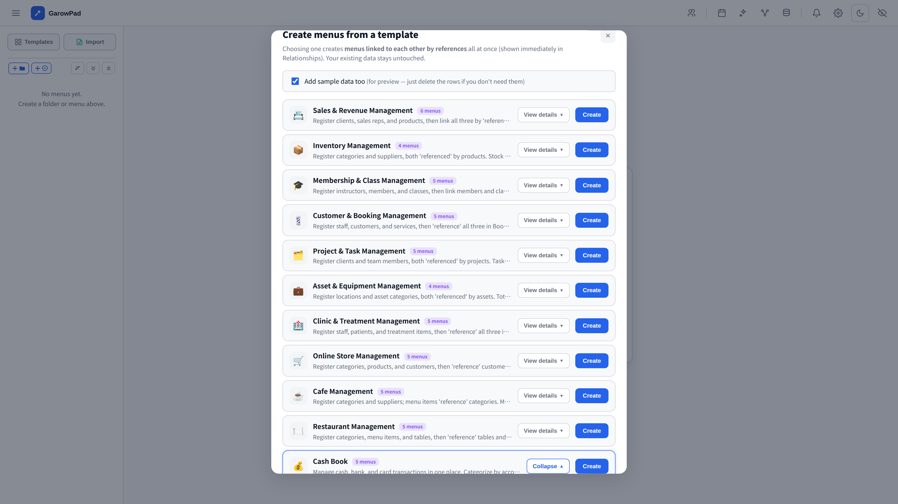
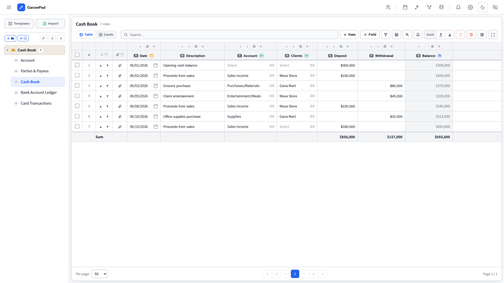
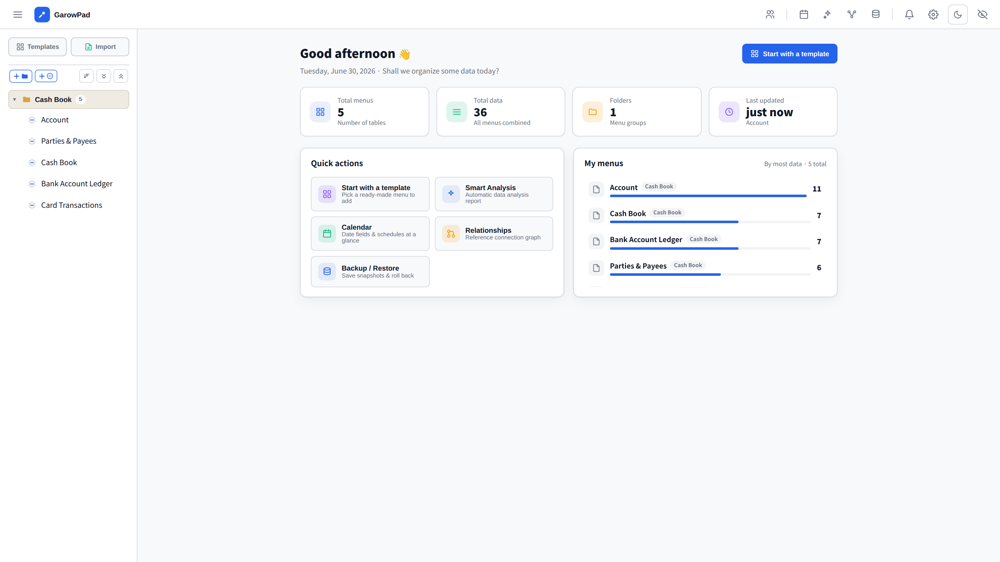
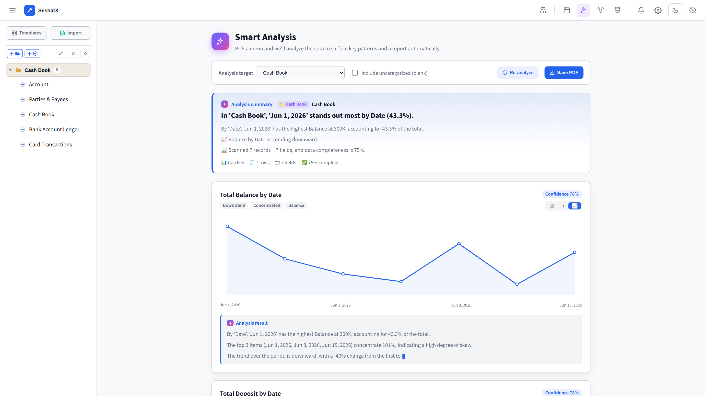
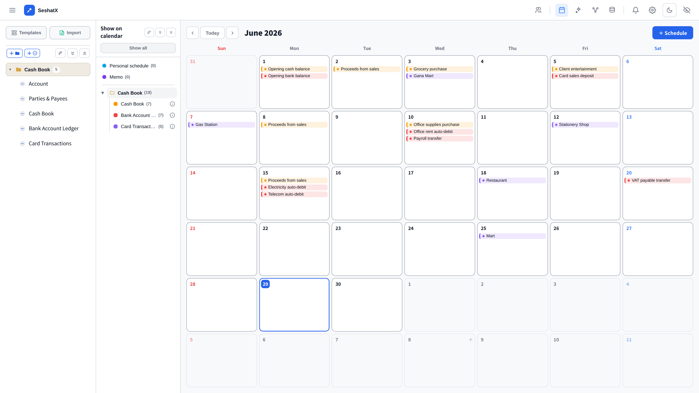
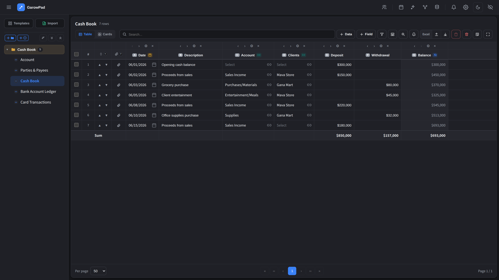

Your data stays on your PC.
SeshatX is an offline, subscription-free data manager — easier than spreadsheets, with dynamic tables, automatic analysis, calendar and backups. No cloud. No login.
Get it on Microsoft StoreWindows 10 / 11 · one-time purchase · 7-day free trial
Start in a minute with templates
Ready-made templates like a cash book — pick one and start right away.

Build your own table
Number, text, date, formula and reference fields — as free as a spreadsheet, but smarter. Even bankbook-style running balances.

Your home dashboard at a glance
See your menus and key numbers the moment you open the app.

One click — automatic analysis
Turn your data into charts, summaries and insights instantly.

Dates become a calendar
Date fields, memos and personal schedules together in one view.

See how your data connects
A relationship graph shows how your menus reference each other.

Easy on the eyes — light & dark
A clean, modern interface in both light and dark themes.
